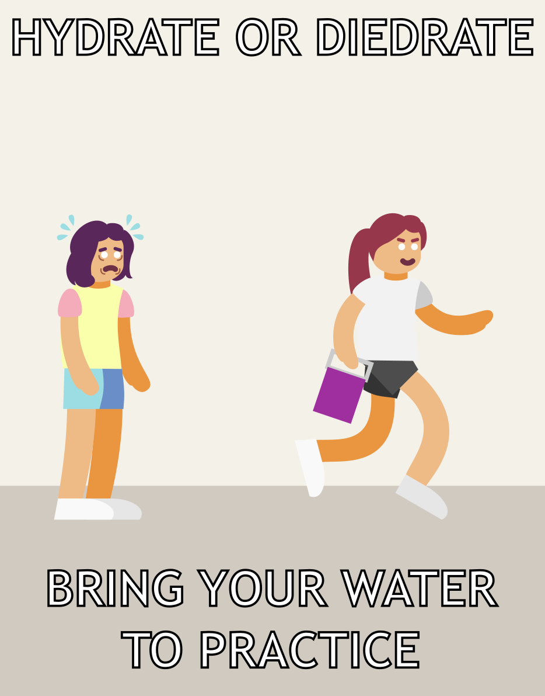

Speaker
Me, or anyone who has had to deal with people not bringing their water to practice.
Occasion
People sometimes do not bring their water, which is incredibly unhealthy
Audience
Anyone in band, especially those who often do not bring water
Purpose
To encourage band members to bring their water.
Subject
Hydration, specifically from water in band
Strategies
Appeal to fear
Most people do not like being extremely sweaty/dead, the propaganda says that if they do not bring water, they will
end up sweaty/dead.
Post Hoc
Most people do not like being extremely sweaty/dead, the propaganda says that if they do not bring water, they will end up sweaty/dead.
Exaggeration/Occlusion of fact
The propaganda implies that only people without water will sweat, while in reality, most everyone will sweat if they are outside exercising.
False dilemma
While in general neglecting to bring water to practice is not good, there are more possible states than hydrated and dead.